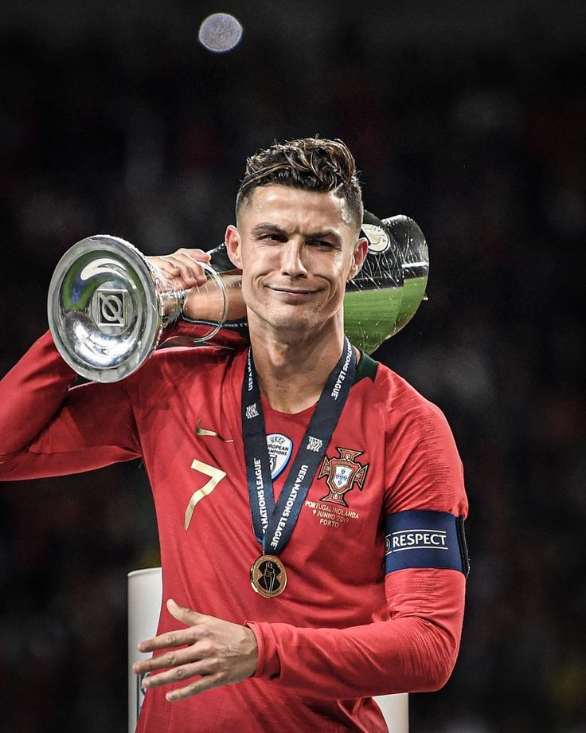
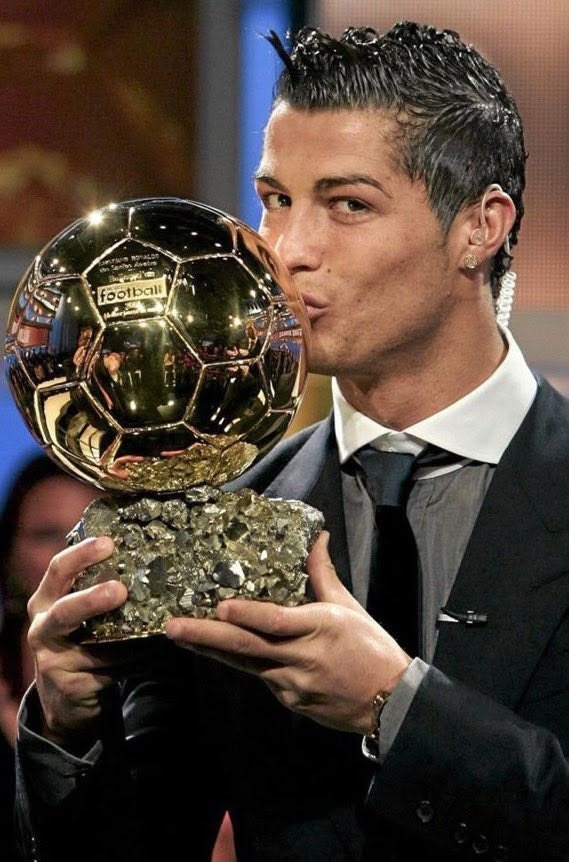

Leadership & responsibility
he have experience taking leadership responsibilities through school activities and student organizations. he enjoy guiding others, working with a team and making sure responsibilities are carried out properly.
SKILLS & CAPABILITIES
I believe every skill begins with curiosity and develops through practice, experience and determination. From technical knowledge to leadership and communication, I continue to build abilities that allow me to approach challenges, work with others and turn ideas into meaningful outcomes.
he have experience taking leadership responsibilities through school activities and student organizations. he enjoy guiding others, working with a team and making sure responsibilities are carried out properly.
he develop his communication skills through presentations, group discussions and participating in university programmes. he enjoyed sharing ideas, interacting with others and learning to communicate with confidence.
he like Being involved in sports and group activities has taught him the importance of cooperation, trust and supporting one another. he believe good teamwork is essential to achieving shared goals.
Through his studies in Information Management, he developing skills in organizing information, handling documents, managing records and understanding how information can be stored and accessed effectively.
he like to exploring web development using HTML, CSS and JavaScript. he enjoy learning how websites work, experimenting with new technologies and building his own digital projects.
he enjoy creating visual designs such as posters, presentations, logos and digital concepts using canva and capcuts. he like experimenting with different ideas and turning them into creative outcomes.
Through sports, studies and everyday challenges, he have learned to become more disciplined, responsible and adaptable. he believe there is always room to improve and learn something new.
In his Thought
Motivation And Disciplines that he has


PEOPLE WHO INSPIRE HIM 01 / 03